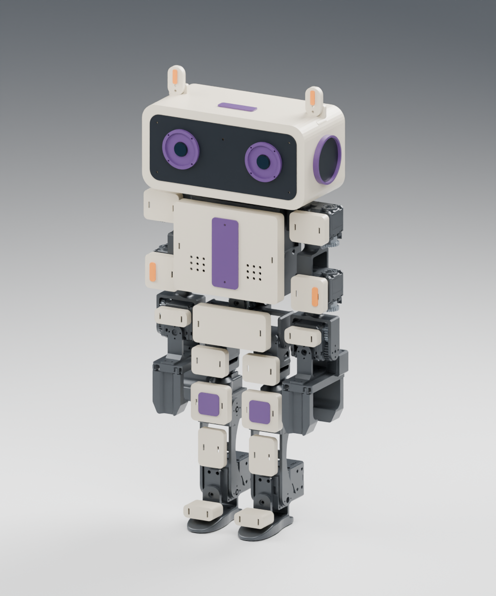
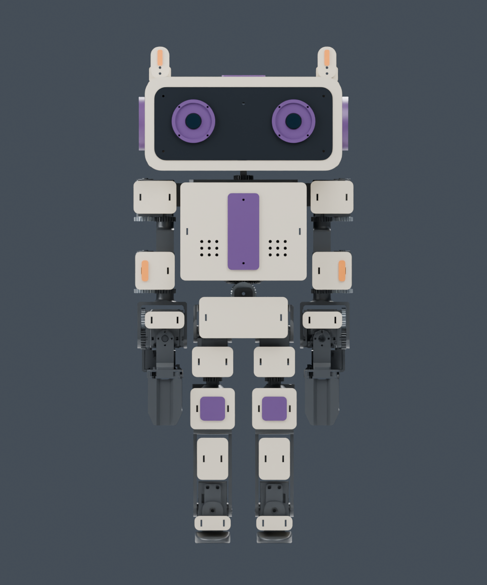
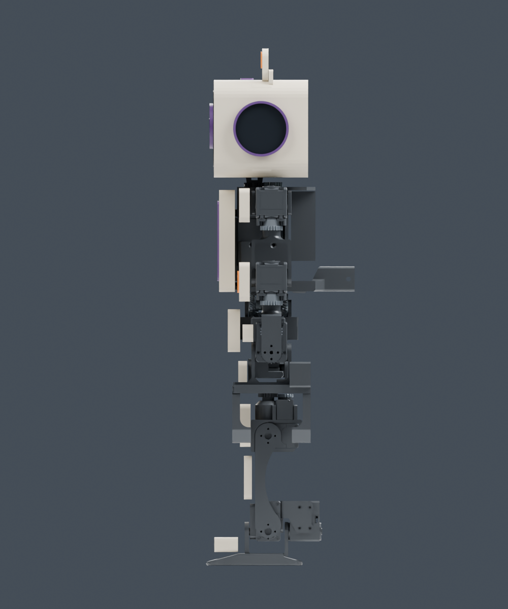
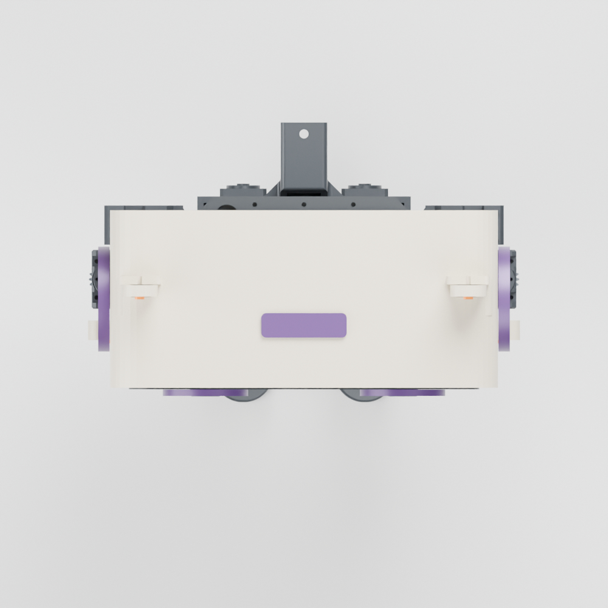
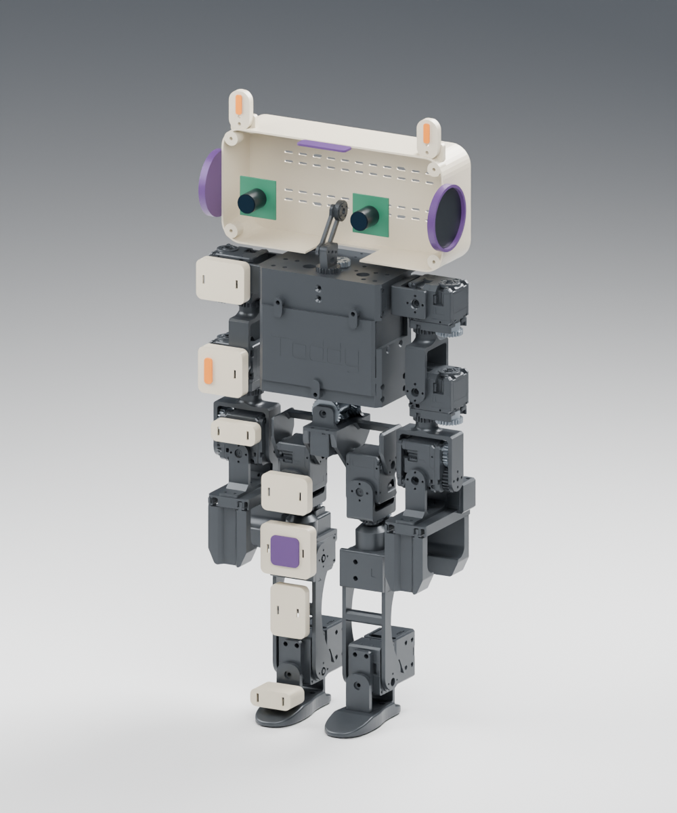

Geometry checks passed; powered operation has not been tested. Resolve the servo-supply voltage issue and verify retention, moving clearances and balance before walking with the approximately 537 g shell. The source chassis print plates are linked separately in the build guide.